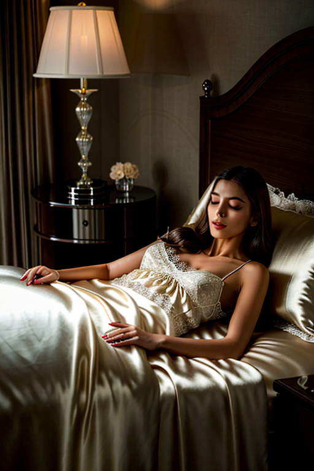
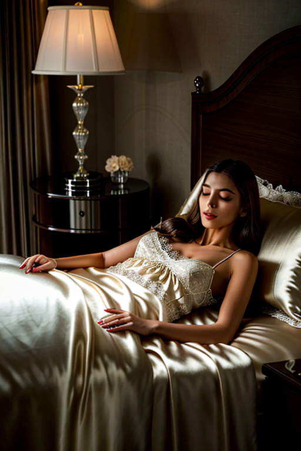

This set explores bedroom girl indoor natural through vintage aesthetics and moody tone under window light. Compositions use symmetry with urban backdrop, keeping focus clear and tidy. Details like evening dress styling and balanced colors make browsing easy.
Browse bedroom images. Page 7 of curated bedroom-style portrait collection.


 


This page explores page7 with a practical focus on visual detail and browsing experience. The image aims to deliver a straightforward visual impression while keeping the file lightweight. A brief explanation clarifies the subject and lighting so visitors can quickly decide where to go next. Alt text and headings are optimized to make the content accessible and to provide consistent cues across the site. Subtle differences in wording help avoid duplication across similar pages. Internal navigation leads to related items with comparable tone or composition. This reduces bounce and supports exploration within the same theme. Alt text and headings are optimized to make the content accessible and to provide consistent cues across the site. Subtle differences in wording help avoid duplication across similar pages. For more context, browse related entries linked nearby; each page offers a slightly different angle to limit overlap.